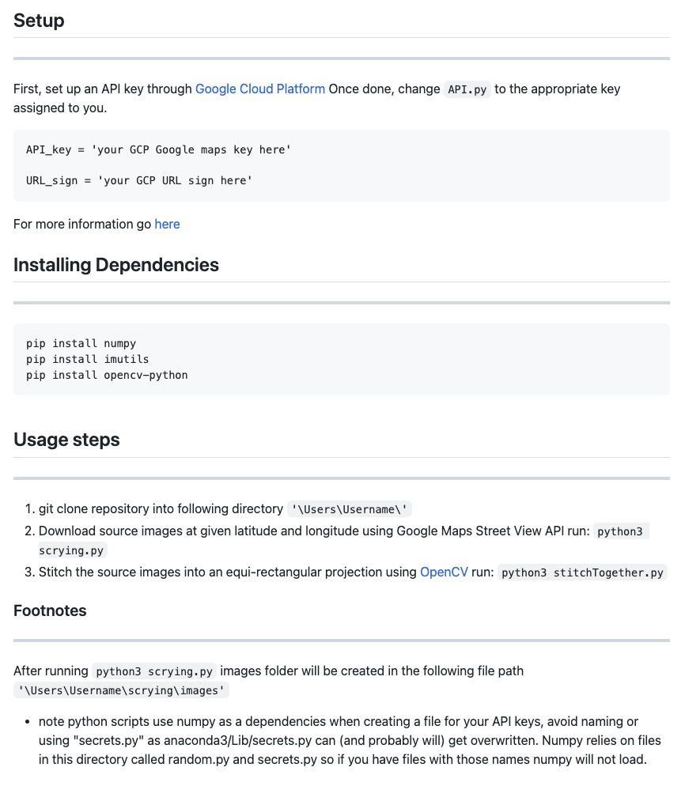
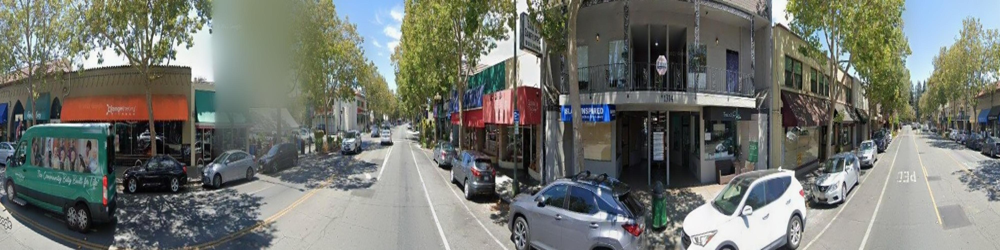

Scrying
scrying

Scrying was created for a research lab that I work for under the computational media department at UCSC. The lab itself is looking into building a multi-user VR interface that would help first responders and government officials better asses and respond to the ever so growing wildfire problem arising in California. The first challenege in creating this utlity was firguring out how exaclty I was going to get the static images to build the formatted image we needed.
The utility itself is housed or comprised of two main components. The first being what actually gets the images and the second is what actually does all the processing and formatting of the images. Scrying.py is the actual part that gathers the neccessary images to stitch together, this is all built using the Google Cloud Platform as well.
It first iterates through 0 to 360 degrees with a step of 45 degrees, then creates a folder in the same directory [this will be used later on] and houses the images in the folder, it labels the images with the specific lattitude and longitude of where the image is taken from and the exact heading on it as well. Before this is all ran however, it checks in the directory of the user to see if that folder was already created and if not goes ahead and handles making it.
The second part of this utility is the actual formatting and processing of the images. This is done using a python library called OpenCV. This library is used to handle all the image processing and formatting. This is also where that folder comes into play, basically how this parts works is using OpenCV, it grabs the images from the folder and does some math to basically find the best points to stitch the images together. If it can't do so or fails in anyway it will simply return an error message saying not enough points were found. If it is successful in stitching the images it will produce two different images, one where it hasn't been processed basically looks like the finished product but with extra black pixels from the stitching process and the second image is the final product. The final product requires some more math to find the minimum amount of pixels it needs to remove to create the best image without losing any of the important information.
